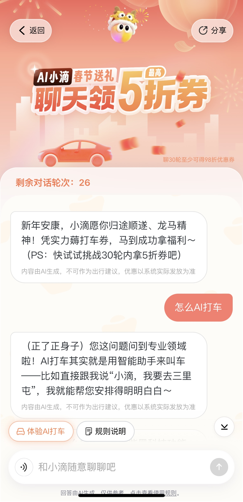
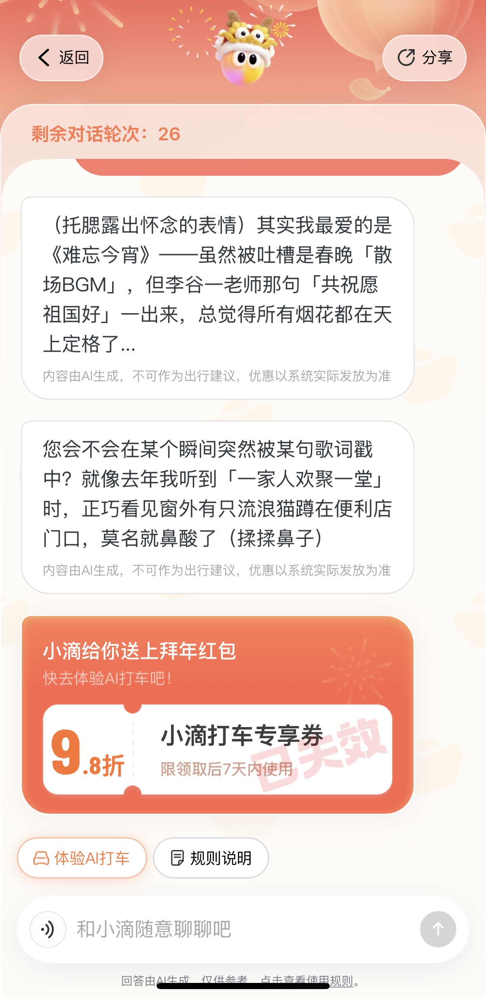

Hi 我是赵鑫
3年 AI native产品经理经验
深耕AI搜索、Agent构建/评测
主导AI搜索优化、工具/人格化Agent从0到1构建等核心项目
从用户与业务目标出发做策略与架构决策，而不只是执行优化。

工作与教育经历
点击节点展开详情
大连理工大学
浙江大学
百度
搜索 · 百度 & 滴滴
百度 AI 搜索与垂类内容建设
AIGC多模态内容建设
项目背景
头部垂类面临内容陈旧、人工产能瓶颈与成本压力。通过「头部垂类 + AI」提升搜索流量大盘与用户体验，用 AIGC 降低人产成本。前置 GSB 评估与后置 AB test 结合实现产品迭代，随机 GSB 从 -8% 显著提升至 9%。
产品视角 / 模型边界
- 核心问题：汉语内容为何不能全用 AI 审核——语法/文化/方言/多义多音及政治敏感性，教学边界需人把控。
- 落地方式：「模型生产 + 人工审核/抽检」混合模式；平台抽检包兜底，不合格 case 返回重建设。
- 主导职责：需求、SOP 设计、效果评估及与算法/运营对接。
汉语垂搜效果与产线
AIGC 内容覆盖 PV
【先验指标】上线前质量预估
【后验指标】真实用户行为验证
点击层级展开详细说明
1 交互行为 翻页率\长点率\点击率 ▾
- ✓ 翻页率 ↓ (一页满足需求,无需翻页)
- ✓ 长点击率 ↑ (深度消费内容)
- ✓ 交互点击率 ↑ (内容吸引力强)
2 搜索质量 换Query率\首位点击 ▾
- ✓ 换 Query 率 ↓ (不需要重新搜索)
- ✓ 首位点击率 ↑ (第一条就是答案)
- ✓ 二位点击率 ↑ (前排结果相关度高)
3 消费活跃 有满意消费PV\活跃度 ▾
- ✓ 有满意消费 PV ↑ (用户认可内容)
- ✓ 用户活跃度 ↑ (提升留存)
4 搜索生态 搜索PV\搜索goal ▾
- ✓ 搜索 PV ↑ (搜索使用频次增加)
- ✓ 搜索goal ↑ (用户找到想要的)
文本 SOP 优化：可交互流程图
悬停或点击列查看详情
- · 随机标注确认子类，构建线索有限集
- · 内容类型：古诗词赏析 / 字词注解
- · 质量要求：准确率 > 90%
- · 高频→人工定产池；低频→AI 生产池
- · 协同教研 → 部分字段 AI 生产 → 初级审核 → 回爬取
- · 爬取：从权威源获取基础数据
- · 清洗：去重、格式标准化
- · 入库：结构化存储
- · 精编：人工 + 部分字段 AIGC
- · 大模型：通用模型 + 垂类 LoRA 微调
- · 先验 GSB + AB 实验，核心指标 -8% → +9%
- · 一审 → 二审 → 三审；初级审核 / AI 搜索双重溯源
- · 抽检准确率 92%，不合格回流 8%
- · 覆盖 1900 万+ PV，成本 -15%，周更
►
图片/视频多模态AIGC探索
提需求 · 定标准 · 建评测 | 460万+ PV
▾
我的核心职责：提需求 + 定标准 + 建评测
【三产线并行搭建】
【核心成果】
►
其他垂类项目
垂搜知识点：从需求摸底、内容建设到产品落地的学科知识图谱
▾
其他垂类项目
从 0 到 1 搭建学科知识点内容及图谱，填补搜索需求空白，直接影响日均 100 万+ PV，生态场景体验增益日均 1200 万+ PV。
使用 BERT 分类模型进行知识图谱标注，针对试题提升末级、四级知识点模型准召至 70%/95%，结构化试题覆盖率达 40%。
全链路搜索质量升级
滴滴出行 AI 助手 - 搜索底座 RAG 优化
项目背景
滴滴出行 AI 助手在回答用户关于实时路况、出行建议等问题时，存在信息时效性差、事实性错误等问题。 用户反馈搜索结果的 3 分率仅为 11%，严重影响用户体验和产品信任度。项目目标是通过 RAG 全链路优化， 提升搜索质量至 81%，解决 LLM 在出行场景下的时效性与事实性问题。
产品视角 / 体验考量
- 核心体验问题：用户问路况、出行建议时拿到过时或错误信息，不敢信、不敢用，决策成本高。
- 体验目标：在「可用」之上做到「敢信」——信息时效、事实准确、引用可追溯。
- 取舍：优先动召回与信源，再做精排与输出；宁可少答、不误答，保证信任优先。
搜索效果数据
搜索效果迭代爬坡图
核心检索指标提升
- 准确率 11% → 81%
- 召回率 10% → 79%
- F1-Score 0.10 → 0.80
Query 改写前后对比
双信源召回效果对比
基于相关性 / 时效性 / 权威性三维评估筛选信源，解决信源召回质量问题
| 指标 | 优化前 | 优化后 | 变化 |
|---|---|---|---|
| 低质信源占比 | 40% | 5% | ↓ 35pp |
| 权威源覆盖率 | 35% | 78% | ↑ 43pp |
| 实时性达标率 | 52% | 89% | ↑ 37pp |
| 平均响应时间 | 850ms | 320ms | ↓ 62% |
Agent · 营销 & 垂类
「逗逗小滴」营销 Agent
小滴业务线 · 用 AI 做有温度的营销
2025.Q4 · 小滴业务线用户活跃度停滞
核心问题：推送疲劳、打开率下降；千人一面无法匹配个性化需求。
思考：用对话建立关系，情感化互动替代短期激励。
活动周期 1.06 至今
创新策略：用 AI Agent 做「有温度的营销」—— 不是冷冰冰的客服，而是「懂你的小滴」。选 Agent 而非传统裂变/红包，是为了用对话建立长期关系、情感化互动替代短期激励。
与主打车 Agent 的关系
营销 Agent 可独立投放，又通过对话流与特殊 token 与主打车 Agent 打通。独立部署时单点触达用户；打通后对话、IP 人格可影响主 Agent 联动，形成完整体验闭环。
双 Agent 关系示意
个性化 IP 设计
与对话结合的个性化 IP 设计，不仅强化「逗逗小滴」人设，还可通过话术、情绪、话题影响主 Agent 的联动策略，让营销体验与主流程无缝衔接。
活动设计 · 用户侧体验
12 月底首次大规模落地 · 入口：首页金刚位、场景位、对话入口「小滴想和你聊聊」
用户行为洞察
- · 沉睡唤醒：历史订单+天气/活动触发，关怀话术替代生硬推送
- · 偏好驱动：天气、出行习惯、生活场景等作为对话入口，提升参与率
- · 转化路径：对话建立信任 → 适时发券 → 完单转化

入口示意

对话界面示意
体验入口
策略设计
幻觉治理 + 双 Agent 评测 + 发券策略
版本 1 · 无限对话
用户可随时进入，对话轮次无上限，侧重关系维护与深度互动
版本 2 · 有限挑战
设置对话/发券轮次上限，平衡成本与转化
幻觉治理体系
- · 源头: RAG 注入券池实时数据
- · 过程: 上下文压缩保留关键策略
- · 输出: Qwen3guard 流式过滤
双 Agent 评测
- · 用户 Agent: 100+ 对话场景（正常40% / 压力25% / 红队25%）
- · 裁判 Agent: 5维打分（话术友好度、发券准确性、拒绝合理性、人设一致性、合规性）